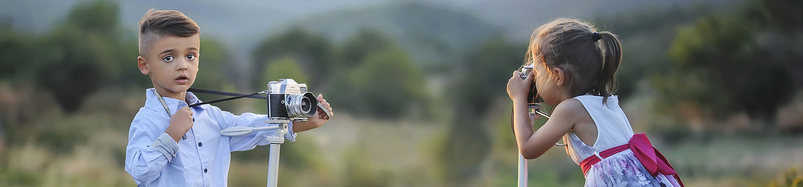
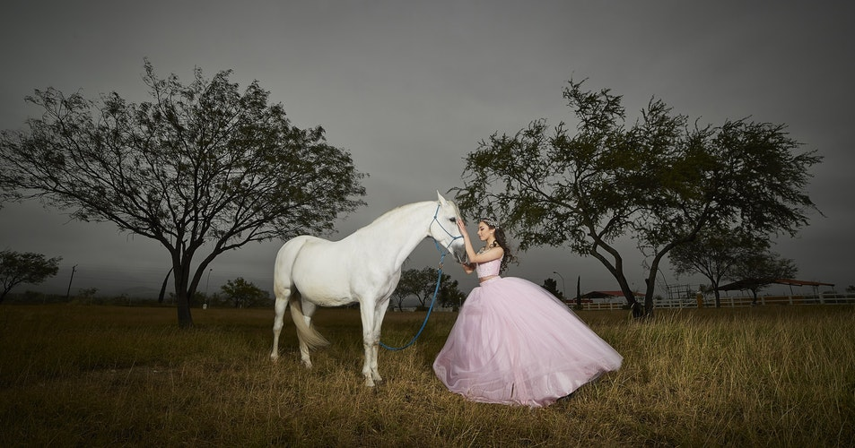

Rui Palha来自葡萄牙，他专注于拍摄街头人文，最大的特色就是：所有照片都是黑白的。但是很奇怪的是，我在他这些“单调”的黑白作品里面，能看到多姿多彩的街头，阳光照射的道路，行人匆匆留下的影子...都被他一一记录。





Rui Palha来自葡萄牙，他专注于拍摄街头人文，最大的特色就是：所有照片都是黑白的。但是很奇怪的是，我在他这些“单调”的黑白作品里面，能看到多姿多彩的街头，阳光照射的道路，行人匆匆留下的影子...都被他一一记录。
Aran Goyoaga，是来自西雅图的一名手机摄影师，她的照片，让人感受到美好的生活气息，因为大部分都是食物和旅行的记录，anyway，美食和旅行，总有一个在路上。
看照片之前我先介绍一下今天的摄影师Stephen Shore，被公认为是将彩色摄影作为艺术形式的领先摄影师之一。1947年出生的他，如今已经70多岁了，他的作品，多次被展览在各个艺术画廊。
在人类历史中，有很多事情需要逆向思维 。只有这种有逆向思维的人才能有所发现，有所创造，成就自己的地位。摄影也是如此。有多少获奖作品如过眼烟云， 多少风-花雪月留不住美丽，多少讲究的光影形式，多少被称颂的作品，过去一段时日便失去色彩， 失去价值。只有那些记录、反应历史，刻画人类生命的东西才会与时间同步增值。
用相机表达出人类心灵最底层的东西，启开原本在每人内心深处的本性。熟悉的事物不可思议面，不可思议事物的熟悉面。
没有位置，就是最好的位置
别想了你是找不到我的
我都说了不行了，你还要 哦呃 哦呃的 完全不理人啊！你再呃我一dao捅死你
免费拨打联系电话：15478815555
微信:**********
QQ:**********